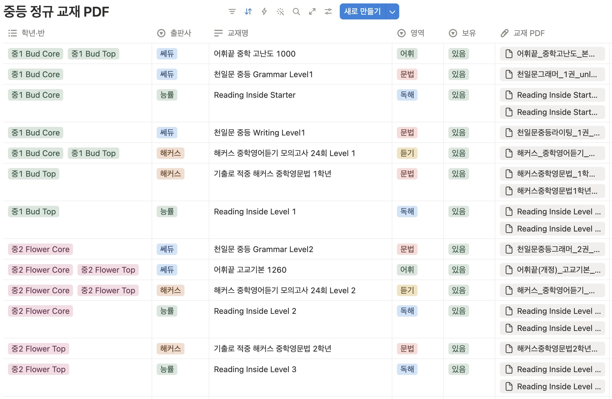
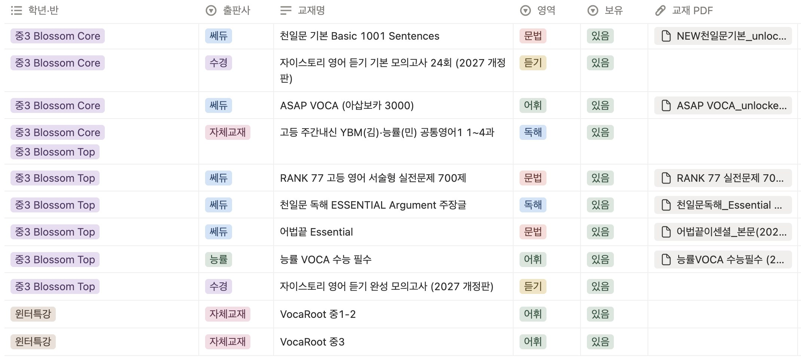

「학원 AI, 어디까지?」 세미나 후속 · A/S Zoom 미팅
40분 이내로 다섯 가지만 전달합니다.
오늘의 순서 · 40분
1 · Trend
그래서 우리 업무 어디에 쓰면 좋을까요
News · 앤트로픽 · 11월 10일
한국 시각 11월 10일 새벽 4시에 공개됐습니다.
답하는 속도가 Fable 5.1보다 최대 30% 빠릅니다.
유료 요금제는 Claude 앱과 Claude Code 모델 목록에서 바로 고릅니다. Pro는 주간 사용량의 50%까지 Fable을 씁니다.
앤트로픽도 대부분의 업무는 Opus 5.5부터 쓰라고 권합니다. Fable은 시간이 오래 걸리는 어려운 작업에만 씁니다.
News · 함께 공개된 것
데이터가 바뀌면 숫자가 따라 바뀌는 대시보드도 만듭니다.
우리 업무 상담 기록 시트, 출결 · 수납 시트 정리
Claude Code에서 어려운 문제를 풀 때 씁니다.
우리 업무 시험 범위 대조, 오류 원인 추적
영상 서비스 힉스필드를 연결해 쓰며 계정은 따로 필요합니다.
우리 업무 수업 영상, 홍보 숏폼
우리 업무 어디에 쓸까
| 모델 | 맡기는 일 | 학원 업무 예 |
|---|---|---|
| Fable 5.2 | 가장 어려운 판단, 사람이 놓치는 결함 찾기 | 순서 · 삽입 문항의 이의 심사 |
| Opus 5.5 | 기본 모델. 판단과 창작 | 문항 출제, 해설, 학부모 안내문, 원인 모를 오류 |
| Sonnet 5.5 | 기준이 정해진 확인과 반복 | PDF 쪽마다 눈 검수, 카톡 · 회의록 요약 |
| Haiku 5.5 | 판단 없는 조회 | 파일 찾기, 개수 세기, 목록 뽑기 |
NY 사례 · 11월 17일
기말 빅북 문항 29개를 같은 조건으로 풀게 해 Fable과 Opus를 비교했습니다. 순서와 삽입 문항 가운데 결함이 있는 11개를 누가 잡는지 봤습니다.
Fable이 잡은 결함
Opus가 잡은 결함
결론 모든 일에 Fable을 쓰지 않습니다. 정답 하나를 끝까지 따져야 하는 자리에만 씁니다.
2 · 오늘 바로 해봅시다
AI와 디스커션 많이 하셨나요
점검 · 2분
AI는 어제 이야기를 기억하지 못합니다. 남겨 둔 파일, 즉 스킬이 있어야 내일의 AI가 오늘의 방식을 이어받습니다.
실습 · 10분
매주 반복하고, 말로 설명할 수 있는 일을 하나만 고릅니다. 예: 시험 범위 안내문, 상담 후 학부모 정리 글
지난 2주 동안 고친 점, 매번 틀리는 점, 내가 결정하는 곳을 AI에게 말로 풀어 줍니다.
AI가 정리한 규칙을 기존 스킬에 덧붙이고, 같은 일을 한 번 더 시켜 달라졌는지 봅니다.
그대로 붙여 넣기
실습 · 지금 같이 입력해 봅니다
클코 입력창에 이 한 줄을 그대로 칩니다
이 컴퓨터의 최근 클코 대화를 클코가 스스로 읽고, 내 사용 습관 보고서를 만들어 줍니다
내가 주로 맡긴 일, 자주 막힌 곳(요청을 잘못 알아들음 · 결과 오류), 써 볼 만한 기능
보고서에서 고칠 점을 골라 "이 내용 내 스킬에 반영해 줘"라고 말합니다
3 · Setup
잘 쓰는 사람의 차이는 모델보다 세팅과 습관에서 납니다
4 · NY's Case Study
프로그램 없이 입반 테스트지로 정확하게 입반시키기
Case · 문제
문항 하나하나가 어떤 문법 항목을 재는지 먼저 정하고, 문항 번호에서 판정까지 이어지게 만들었습니다.
Case · 시험지
중1 · 중2 · 중3 시험지와 고1 입반 테스트
문항, 60분 모두에게 같은 시간
문항마다 영역(어휘 · 문법 · 독해 · 서술형), 층(기초 · 표준 · 심화), 교재 단원을 붙여 둡니다.
재원생이 먼저 보고 기준점을 조정하고, 그 뒤 신규 학생의 입반 테스트로 씁니다.
모든 학생에게 60분을 다 주고, 걸린 시간은 분석에서 뺐습니다.
Case · 실제 노션 화면


반마다 교재명 · 영역 · 교재 PDF가 한 줄씩. 문항을 교재 단원과 대조할 때 클코가 이 파일을 봅니다.
Case · 판정
| 결과 | 판정 |
|---|---|
| 자기 학년 기초층 통과 | Core 또는 Top 반 제안. 영역별 기준선을 함께 봅니다 |
| 기초층 일부 미달 | 아래 학년 반을 제안하고, 처방 후 재응시 길도 함께 안내 |
| 만점권 | 다음 학년 시험을 추가로 보게 해 월반 여부를 검토 |
| 가장 아래 학년이 미달 | 입반 불가. 1~3개월 학습 처방을 주고 다시 오도록 안내 |
Case · 과정
Case · 검수
A3 접지 4쪽. 진단 결과, 문법 지도와 오답 원인, 학습 계획과 반 교재 구성이 학생마다 자동으로 채워집니다.
Case · 내 업무로 옮기면
어느 반에 누구를 넣는지 말로 정해 둡니다. 시험은 그 뒤입니다.
번호에서 영역, 층, 교재 단원으로 이어지는 표를 만듭니다.
정답이 하나인지 만든 사람이 아닌 눈으로 확인합니다.
기준선은 실제 결과로 보정합니다. 처음부터 완벽하지 않아도 됩니다.
5 · 이번 주 Q&A
Q&A
작업 폴더
인터넷 위의 내 폴더
같은 작업 폴더
파일을 저장소라는 온라인 폴더에 올려 두고 여러 컴퓨터에서 같이 쓰는 서비스입니다. 원래 개발자들이 코드를 함께 관리하려고 쓰던 곳입니다.
올릴 때마다 무엇을 언제 바꿨는지 기록이 남습니다. 잘못 고쳐도 이전 버전으로 되돌릴 수 있습니다.
처음 연결만 해 두면 "깃허브에 올려 줘", "받아 줘"라고 말해서 클코에게 맡길 수 있습니다.
오늘의 숙제